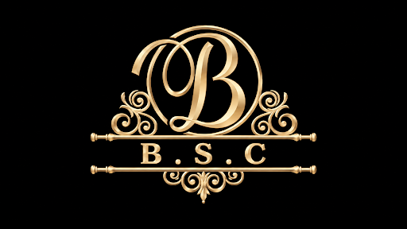
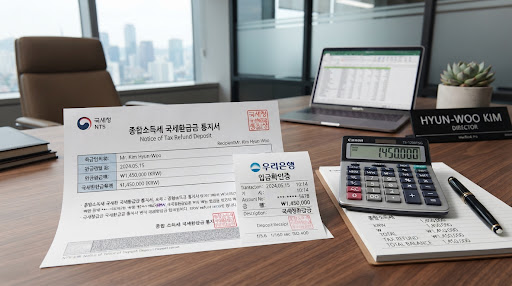

Service Architecture
조세환급 프로세스
사전 무상 진단부터 세무서 정식 소명 대리, 환급금 수령 및 5개년 사후관리까지 7대 핵심 모듈로 빈틈없이 지원합니다.
verified
국세기본법 기준 체계적 권리 구제

URL 인증
01
01. URL 간편 인증
본인 동의 절차를 통해 홈택스 및 근로복지공단 과거 신고 데이터를 안전하게 수집합니다.
verified_user
당일 즉시 수집 · TLS 256 암호화
무료 정밀 분석
02
02. 환급 여부·금액 검토
과거 5개년 납부 내역과 법정 감면 요건을 대조하여 정밀한 예상 환급액을 도출합니다.
price_check
비용 부담 0원 (전액 무료)

간편 전자계약
03
03. 위임 계약서 작성
무료 사전 검토 후 예상 환급액 확인 시에만 고객의 자율적 의사로 위임 계약을 체결합니다.
verified
사전 착수금 0원 · 100% 자율

법률 서류 완성
04
04. 신고서 작성 및 소명
경정청구 이유서 작성 및 과세관청 제출을 위한 객관적 입증 서류를 빈틈없이 편성합니다.
draw
전문 공인 세무사 검인 완료
공식 세무서 접수
05
05. 세무서 접수 및 대리
관할 세무서에 정식 접수를 진행하고 담당 조사관의 자료 보정 및 소명 요구에 즉시 대응합니다.
support_agent
조사관 전담 대면 소명 대리
지급 확인 및 정산
06
06. 조세환급 완료 및 정산
관할 세무서의 인용 결정 통지서와 고객 계좌로의 실제 국세환급금 입금을 확인한 후 정산합니다.
payments
실제 환급 입금 후 청구
07
07. 사후관리
5-Year Compliance Guarantee조세환급 이후에도 당시 받았던 경정청구 내용에 대해서 철저히 사후관리 해드립니다.
check_circle과세관청 보정 요구 무상 대응
check_circle담당 세무사 전담 이력 관리
check_circle사후 소명 & 추징 리스크 완전 방어
컴플라이언스 준수
5개년 책임 사후관리
info ※ 환급 여부와 금액은 관할 세무서의 심사 결과에 따라 달라질 수 있습니다.
국세기본법 제45조의2 기준 준수